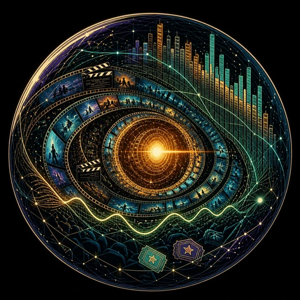

DeepFlux — LLM-Powered Browser, Downloader, File Manager & Player
One app for the whole media path: browse the web, grab videos, manage files, and play them. DeepFlux is an LLM-powered internet browser, video downloader, file manager, and video player.